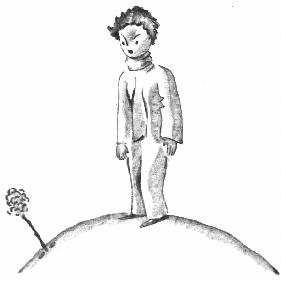
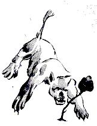
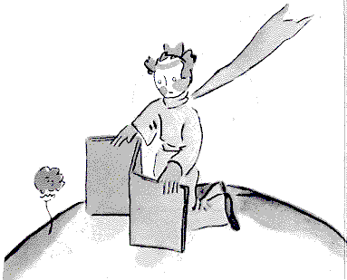
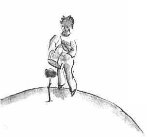

Chuir mé eolas an-tapa ar an bhláithín sin. Ar ndóigh, bhí
bláthanna ar phláinéad an phrionsa bhig riamh, bláthanna an-
simplí nach raibh ach sraith amháin piotal orthu, nach raibh ag
cúnglú ar dhuine ar bith ná ag cur isteach ar dhuinc ar bith.
Thagadh siad amach maidin amháin tríd an fhéar, agus d'imíodh
siad as arís tráthnóna. Ach an bláithín áirithe seo, bhí sé tar éis
péachadh amach lá, ó ghráinnín síl a shiabadh isteach ó níl fhios
cén áit, agus thug an prionsa beag aire go han-chúramach don
bhachlóg sin nach raibhar dhóigh ar bith cosúil leis na bachlóga
eile. D'fhéadfadh gur baobab de chinéal úrnua a bheadh ann.
Ach níorbh fhada gur stad an planda ag fás, agus gur thosaigh sé
ar bhláth a dhéanamh. Choimhéad an prionsa beag an bhachlóg
mhór mhillteach ag fás, agus é cinnte go nochtfadh radharc
míorúilteach aisti. Ach bhí an bláth an-mhall á réiteach féin
amach, taobh istigh den seomra glasuainc sin. Bhí sé ag roghnú
a cuid dathanna go cúramach. Bhí sé ag curac huid éadaigh uirthi
féin go mall, gach piotal acu i ndiaidh a chéile. Níor theastaigh
uirthi teacht amach os comhair an tsaoil lán clupaidí agus
roicneacha ar nós na gcocán dearg. Níor theastaigh uaithi teacht
amach ach faoi loinnir a lánáilleachta. Is ea go díreach! Cluanaire
ceart a bhí inti! Bhí sí tar éis na laethanta agus na laethanta a
chaitheamh i mbun an smideadh diamhrach sin. Agus ansin
maidin amháin díreach ag éirí na gréine, thaispeáin sí í féin.
Agus cad a dheanfadh sí, an geidín seo a chuir an méid sin stró
agus cúram uirthi féin, ach meánfach a ligean agus a rá:
-Och, níl mé i mo dhúiseacht go fóill... Gabhaim pardún...Tá mo

ghruaig ina dos ar fad...
Ní raibh an prionsa beag in
ann a iontas agus a
mhórmheas a cheilt:
- Tá tú go hálainn.
- Is fíor duit, arsa an bláithín
go caoin, agus tháinig mé ar
an saol san aon am leis an
ghrian......
D'aithin an prionsa beag nach
raibh modhúlacht ar bith ag
baint léi, ach nach í a bhí
geanúil!
-Sílim go bhfuil sé in am bricfeasta, a dúirt sí leis ansin, ar mhiste
leat freastal orm...
Tháinig cearthaí ar an phrionsa beag, d'imigh sé agus fuair
canna fuaruise agus d'fhreastail ar an bhláth.
Sa dóigh sin níorbh fhada go raibh sé cráitc ag an bhaois sin
aici, agus í beagán goilliúnach
ina theannta. Lá amháin, mar
shampla, ag tagairt don chúpla
dealg a bhí aici, dúirt sí leis an
Phrionsa beag:
- Dá dtuocfadh tíogar, uigne
agus uilc, níorbh cagla liom
iad.
- Níl tíogar ar bith ar mo
phláinéadsa, arsa an prionsa
beag mar agóid, agus rud eile
níitheann tíogar lusanna.
-Nílus mise,arsa an bláithín
go caoin.

- Gabh mo leithscéal...
- Níl eagla orm roimh na
tíogair beag ná mór, ach
cuireann siorraí gaoithe gráin
orm. An bhfuil seans ar bith
go mbeadh scáthlán agat?
- Gráin le siorraí
gaoithe...ní maith mar a
tharla, i gcás planda, ab ea
tuairim an phrionsa bhig. Is
bláithín an-chasta í sin...
- Cuirfidh tú faoi chlogad
gloine mé tráthnóna. Tá sé an-fhuar san áit seo agat. Níl sé
feistithe i gceart. San áit arb as domsa...
Ach thost sí go tobann. Is ina gráinne síl a tháinig sí. Ní raibh
cuimhne ar bith aici ar na domhain eile. Bhí ceannfaoi uirthi mar
gur beireadh amach uirthi agus bréag chomh saonta sin á cur le
chéile aici,lig sí casachtach bheag cúpla uair leis an phrionsa beag
a chur san éagóir.

- Maidir leis an scáthlán
úd?...
-Bhí mé ag dul á lorg ach
go raibh tú ag caint liom.
Chuir sí lena casachtach
ansin chun aiféala a chur
air.
Mar sin, d'ainneoin a
ghrá agus a dhea-
mhéine, ní raibh
an prionsa beag
ibhfad ag éirí
amhrasach
fúithi. Thóg sé
dáiríre rudaí a
dúirt sí a bhí gan
tábhacht, agus bhí
an-mhíshásamh
air.

“Ba cheart dom
gan éisteacht léi,”
a dúirt sé liom lá
amháin i modh
rúin, “ní ceart
cluas a thabhairt
do na bláthanna
choíche. Ní mór breathnú orthu agus bolú díobh. Chuir mo
cheannsa cumhracht ar fud mo pláinéid, ach ní raibh mé in ann
taitneamh a bhaint as. An chaint sin aici faoi chrúba, a chuir as
dom an oiread sin, trua ba cheart di cur orm...”
Lig sé rún eile liom:
“Níor thuig mé a dhath an t-am sin! Ba cheart dom breith a
thabhairt uirthi de réir mar a rinne sí, chan de réir mar a dúirt sí.
Choinnigh sí cumhracht agus solas liom. Níor cheart dom
teitheadh uaithi! Ba cheart dom an gean a aithint taobh thiar de
na cleasanna bochta sin aige. Tá an oiread sin anonn is anall le
bláthanna! Ach bhí mé ró-óg lena thuigbheáil cén dóigh le mo
ghrá a léiriú di.”